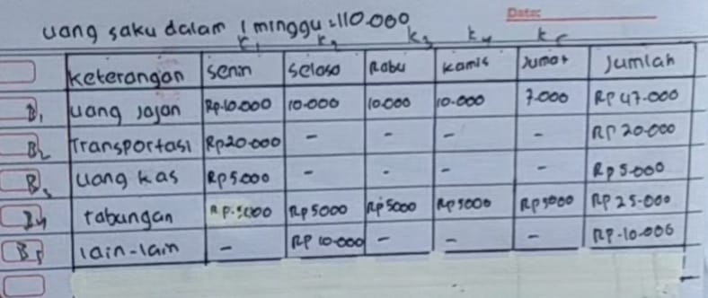
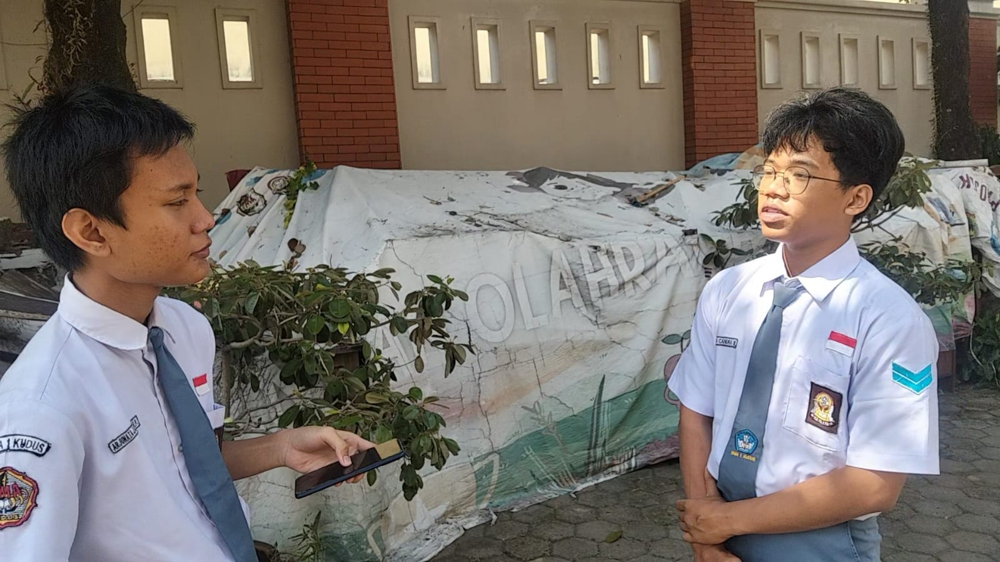

Pendidikan
Kegiatan Kokurikuler yang Mengkolaborasikan Matematika, Kesehatan, Spiritual, dan Keterampilan Berbahasa
Kudus, 8 September 2025 - Kegiatan kokurikuler kali ini mengkolaborasikan berbagai materi pelajaran, mulai dari Matematika tentang matriks, PJOK tentang pentingnya menjaga kebugaran jasmani salah satunya dengan nalan sehat, Pendididkan Agama Islam yang menekankan sikap bersyukur pada allah swt, dan Bahasa Indonesia tentang wawancara terhadap narasumber. Kegiatan ini berlangsung di lingkungan SMA 1 Kudus
Kegiatan ini dirancang tidak hanya untuk menambah wawasan akademik siswa,tetapi juga menumbuhkan sikap, keterampilan, dan nilai karakter yang bermanfaat dalam kehidupan sehari-hari. Melalui pembahasan lintas mata pelajaran, siswa mendapatkan pengalaman belajar yang lebih bermakna karena mampu melihat keterkaitan antara ilmu pengetahuan, kesehatan, nilai spiritual, dan keterampilan berbahasa.
Kegiatan dibuka dengan sambutan koordinator yang menekankan pentingnya integrasi ilmu pengetahuan, kesehatan, nilai-nilai spiritual, dan keterampilan berbahasa dalam pembentukan karakter siswa.
Materi pertama adalah Matematika, di mana siswa mempelajari matriks, jenis-jenis matriks, serta operasi dasar matriks. Contoh aplikasi praktis juga diperlihatkan agar siswa mampu melihat manfaat penggunaan matriks dalam kehidupan sehari-hari, seperti menghitung nilai pengeluaran dalam satu minggu. Dengan contoh, dilaporan ini di ketahui uang jajan salah satu dari siswa dalam satu minggu, contohnya seperti pada kasus siswa diatas, di ketahui siswa tersebut perminggunya di beri uang saku sejumlah 10k, dan di buat data data pengeluarannya dalam bentuk tabel, seperti uang jajan, transportasi, dan lain lain, setelah data terkumpul di lanjut ke proses pembuatan matriksnya dengan memperhatikan baris dan kolom yang telah di buat dalam tabel tersebut
Sesi selanjutnya membahas kesehatan dari sudut pandang PJOK. Topik yang dibahas meliputi pentingnya menjaga kebugaran tubuh salah satunya dengan jalan cepat. Penekanan diberikan bahwa menjaga kesehatan bukan hanya demi aktivitas fisik, tetapi juga mendukung konsentrasi dan prestasi akademik. Jalan cepat dilakukan pada saat Car Free Day(CFD) saat hari Minggu di Alun Alun Kudus.
Jalan cepat adalah cabang atletik unik di mana Anda berjalan secepat mungkin tanpa mengangkat kedua kaki dari tanah. Berbeda dengan lari, satu kaki harus selalu menyentuh permukaan, dan kaki depan wajib lurus saat menapak hingga melewati badan. Ini membutuhkan koordinasi dan kekuatan otot yang baik.Olahraga ini melatih kecepatan dan ketahanan, dengan jarak tempuh bervariasi. Manfaatnya banyak: jantung dan paru-paru lebih sehat, otot kuat, risiko penyakit jantung berkurang, dan berat badan terjaga. Jalan cepat juga mudah dilakukan di mana saja.
Dalam kegiatan kokurikuler, jalan cepat mengajarkan keseimbangan fisik dan mental. Setelah refleksi spiritual, siswa berlatih fisik intensif, menunjukkan pendidikan yang menyeluruh. Dimensi spiritual diperkuat melalui materi agama dengan tema bersyukur. Siswa SMA 1 Kudus diajak untuk mewujudkan rasa syukur kepada Allah melalui tindakan nyata, seperti menghargai fasilitas pendidikan, menghormati guru dan sesama siswa, serta menjaga kebersihan dan ketertiban lingkungan.
Pada bagian Bahasa Indonesia, fokus diarahkan pada wawancara dengan narasumber yang juga merupakan siswa SMA 1 Kudus. Bernama Raffa Chandra, panitia BPKO. Wawancara ini membahas terkait kegiatan pemilihan ketua osis pada periode 25/26. Salah satu pertanyaan yang diajukan adalah “Apa tujuan utama dibentuknya BPKO disekolah kita?”Raffa menjawab bahwa dibentuknya BPKO ini bertujuan agar mempermudah proses pemilihan ketua OSIS.”BPKO itu tujuannya untuk membantu proses pemilihan ketua OSIS,”ujar Raffa Kegiatan kokurikuler ini diharapkan dapat memperkaya pengetahuan siswa serta membentuk karakter dan keterampilan praktis yang bermanfaat dalam kehidupan sehari-hari. kesimpulan ditarik bahwa kegiatan kokulikuler ini tidak hanya memperkaya pengetahuan tetapi juga membentuk karakter dan keterampilan praktis yang bermanfaat dalam kehidupan sehari hari. Vlog ini juga mengintegrasikan berbagai mata pelajaran: Matematika (analisis data matriks), PAI (sikap spiritual), PJOK (aktivitas fisik), dan Bahasa Indonesia (komunikasi). Pembelajaran tidak terbatas di kelas, tetapi tumbuh dari pengalaman nyata.
Arjunata Javashah Rayana Putra, Kevin Ardhi Hermawan, Minkhatul Maulani • 23 September 2025 Jam 11.15 WIB